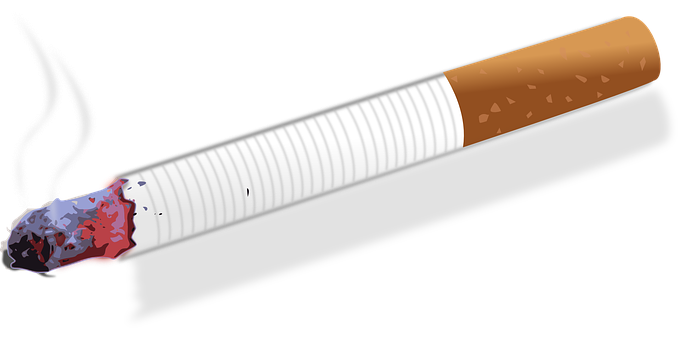
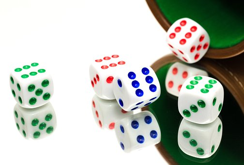
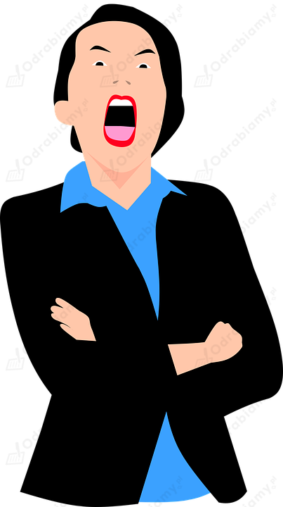

Rozwiązanie 1.:
Na podstawie danych przedstawionych na wykresie należy wskazać, że jedynie 19,8% respondentów spożywa codziennie wspólne śniadania z rodziną, zaś 29,7% spożywa codziennie kolacje z bliskimi. Od 5 do 6 dni w tygodniu ok. 8,3% ankietowanych spożywa codziennie śniadania z rodziną, zaś 11,7% je codziennie kolacje. Wyniki badania wskazują, że 12% osób biorących w nich udział zadeklarowało, że 3-4 dni w tygodniu je śniadania z rodziną, zaś 14,8% twierdziło, że je z nią kolację. Rzadko, bo jedynie raz w tygodniu aż 29,8% respondentów wskazało, że je śniadania z bliskimi i 14,4% je kolacje z członkami własnej rodziny. Rzadziej niż raz w tygodniu 11,6% respondentów je śniadania i 11,8% je kolacje wspólnie z bliskimi. Duży odsetek ankietowanych w ogóle nie je śniadań (18,5%) oraz kolacji (17,6%) z rodziną.
Jedzenie wspólnych posiłków jest bardzo ważne z punktu widzenia budowania prawidłowych relacji międzyludzkich pomiędzy członkami danej rodziny. Podczas wspólnego spożywania posiłków rodzina może zacieśniać swoje stosunki, przekazywać sobie informacje na temat własnych doznań, przeżyć, czy dzielić się z członkami rodziny swoimi radościami i problemami. Wspólne spędzanie czasu pozwala jeszcze bardziej zżyć się członkom rodziny. Współcześnie jest to bardzo ważne, ponieważ ludzie coraz częściej są zabiegani, żyją w pośpiechu i właśnie wspólne posiłki mogą być odskocznią dla nich od spraw, które zaprzątają ich głowy i niekiedy mogą stanowić jedyny czas, w którym rodzina jest razem w danym dniu.
Rozwiązanie 2.:
Zadanie ma charakter indywidualny, bo wiąże się z wyrażeniem własnej opinii. Toteż proponowane rozwiązanie może przybrać jedynie postać przykładowej wskazówki pomocnej do samodzielnego opracowania odpowiedzi.
Przykładowe wskazówki pomocne do samodzielnego opracowania odpowiedzi:
Wspólne spożywanie posiłków jest ważne, ponieważ umożliwia rodzinie spędzanie czasu razem, rozmawianie i budowanie bliskich więzi. W szczególności dzieci i młodzież powinni spożywać posiłki z rodzicami, ponieważ to pomaga im w rozwoju i uczeniu się dobrych nawyków żywieniowych oraz wzmacnia relacje rodzinne. Wspólne posiłki pozwalają ponadto rodzicom monitorować dietę swoich dzieci i upewnić się, że jedzą zdrowe i zrównoważone posiłki. Nade wszystko wspólne spożywanie posiłków przez członków rodziny pozwala im zacieśniać więzi i budować dobrą atmosferę, jak też stanowi okazję do rozmów na różne tematy.
Z przytoczonych wyników badań wynika, że 18,5% osób w wieku od 11 do 16 lat nigdy nie spożywa śniadań wraz z rodzicami, a 17,6% młodych ludzi w tym wieku nigdy nie jada kolacji razem z rodzicami. 19,8% osób w wieku od 11 do 16 lat je codziennie śniadania z rodzicami, zaś 29,7% osób w tym wieku deklaruje, że codziennie jada z rodzicami kolacje. Aby budować trwałe relacje z najbliższymi, trzeba mieć z nimi jak najwięcej kontaktu. Jednak liczy się nie tylko długość owych kontaktów, ale też jakość. Czasami stosunkowo rzadki kontakt, powiedzmy raz w tygodniu, może okazać się wystarczający, jeśli polega na miłej, szczerej i pogłębionej rozmowie.
Rozwiązanie 1.:
To zadanie ma charakter indywidualny. Sam/a musisz je wykonać. Poniższe informacje mogą pomóc Ci w opracowaniu własnej prezentacji.
UŻYWKI I NAŁOGI (UZALEŻNIENIA W RODZINIE)
Nałóg to - najogólniej rzecz ujmując - szkodliwy dla zdrowia nawyk. Inaczej można nazwać go uzależnieniem, czyli nabytym stanem zaburzenia zdrowia psychicznego i fizycznego, odznaczającym się czasowym lub stałym przymusem wykonywania określonej czynności lub przyswajania psychoaktywnej substancji chemicznej. W tym sensie można mówić o różnorakich uzależnieniach, na przykład od korzystania z Internetu, palenia papierosów, picia alkoholu czy brania narkotyków.
Wśród zagrożeń, jakie mogą wynikać z nałogu, można wskazać:
- odebranie człowiekowi wolności,
- obniżenie sprawności intelektualnej jednostki,
- utrudnienie człowiekowi podejmowania racjonalnych wyborów,
- zmniejszenie aktywności życiowej,
- osłabienie kondycji zdrowotnej, a w skrajnych sytuacjach śmierć,
- zawężenie relacji społecznych,
- wzrost agresji u jednostki,
- powstanie negatywnych odczuć wynikających ze świadomości pozostawania pod jarzmem nałogu,
- trudność porzucenia uzależnienia,
- zniszczenie więzi społecznych i rodzinnych jednostki,
- możliwość utraty pracy,
- wyniszczenie organizmu,
- spadek odporności organizmu,
- obniżenie jakości życia
Regularne nadużywanie alkoholu powoduje ogromne szkody w organizmie człowieka. Najbardziej wrażliwa na działanie alkoholu jest tkanka nerwowa. Alkohol powoduje niszczenie komórek nerwowych, co z kolei powoduje zaniki pamięci, problemy z koncentracją i zaburzenia psychiczne. Alkohol jest trucizną, dlatego musi być neutralizowany w wątrobie, jednak zbyt duże dawki niszczą strukturę wątroby i mogą prowadzić do marskości. Zwłókniona wątroba nie może pełnić swoich funkcji - obniża się jej wydajność detoksykacyjna oraz sprawność w regulacji poziomu cukru we krwi. Alkoholicy często cierpią więc na cukrzycę. Alkoholizm ma negatywny wpływ także na układ krwionośny, a w szczególności na mięsień sercowy. Nadużywanie alkoholu może powodować nadciśnienie tętnicze oraz zawał serca. Alkohol wpływa także na narządy przewodu pokarmowego, powodując ich owrzodzenie.
Alkoholizm to choroba alkoholowa, inaczej nazywana uzależnieniem od alkoholu. Każda forma uzależnienia jest szkodliwa, ponieważ wpływa ona na psychikę człowieka. Uzależnienie zniewala człowieka i odbiera kontrolę nad samym sobą. Ogromna chęć spożycia alkoholu silnie wpływa na stan psychiczny organizmu, zwłaszcza wtedy kiedy alkohol jest z pewnych względów niedostępny. Alkoholik staje się wtedy drażliwy i agresywny dla otoczenia. Również w stanie upojenia alkoholicy mogą być agresywni, wszczynać kłótnie lub bójki. Nierzadko zdarza się, że osoby będące pod wpływem alkoholu biją swoich najbliższych lub wyrządzają im inne krzywdy na tle psychicznym. Nierzadko również dochodzi do wypadków drogowych, których sprawcami są pijani kierowcy. Zachowanie się alkoholików sprawia, że zostają oni odrzuceni i wykluczeni ze społeczeństwa.
Narkomania jest uzależnieniem od psychoaktywnych substancji chemicznych (narkotyków), które w znaczny sposób oddziałują na aktywność mózgu i wpływają na percepcje. Powodują stany euforii, relaksu, przyjemności, sprawności intelektualnej. Dają wrażenie funkcjonowania i myślenia na "zwiększonych obrotach". Organizm przyzwyczaja się do sztucznie wywoływanych stanów, do tego stopnia, że po odstawieniu substancji (lub zmniejszeniu ich dawki), które je powodują, pojawia się tzw. zespół abstynencyjny. To szereg objawów odstawienia narkotyków, które różnią się w zależności od rodzaju narkotyku. W każdym przypadku zostaje zaburzone funkcjonowanie układu krążenia, układu nerwowego i trawiennego. Odstawienie narkotyku mocno odbija się na psychice. Pojawią się tzw. głód narkotykowy, czyli trudna do opanowania chęć sięgnięcia po używkę. Stan ten może utrzymywać się przez kilka dni. Najtrudniejszy okres przypada na 3-4 dzień odwyku.

Rozwiązanie 2.:
Zadanie ma charakter indywidualny. Dlatego proponowane rozwiązanie może zawierać wyłącznie przykładowe wskazówki pomocne do samodzielnego opracowania zagadnienia.
Przykładowe wskazówki pomocne do samodzielnego opracowania zagadnienia:
-> PRZEMOC I AGRESJA W RODZINACH
Przemoc i agresja w rodzinie to wszelkiego rodzaju działania lub zachowania, które są niezgodne z prawem lub etyką i powodują fizyczne, emocjonalne lub seksualne cierpienie, szkody lub krzywdy wśród członków rodziny. Mogą to być między innymi: bicie, molestowanie, szantaż emocjonalny, kontrola, izolacja, stosowanie przemoc psychicznej lub ekonomicznej. Przemoc w rodzinie jest poważnym problemem społecznym i może mieć poważne konsekwencje dla zdrowia i dobrostanu ofiary. Jednak okazuje się ona mieć także negatywny wpływ na samego sprawcę, na którego działa demoralizująco. Często też dokonuje się, ponieważ z poważnymi trudnościami życiowymi boryka się sam sprawca, który szuka w ten sposób możliwości odreagowania lub traci nad sobą kontrolę.
Dane statystyczne na temat przemocy w rodzinie w Polsce mówią, że ogólna liczba osób dotkniętych przemocą w rodzinie wyniosła w 2019 roku 227 826. Zdecydowaną większość stanowiły kobiety (124 382 w porównaniu do 39 625 mężczyzn i 63 819 dzieci). Wśród zatrzymanych sprawców zdecydowaną większość również stanowili mężczyźni (16 647 w porównaniu do 606 kobiet). Trzeba jednak pamiętać, że mężczyźni mniej chętnie zgłaszają podejrzenie, iż padają ofiarami przemocy w rodzinie, ponieważ obawiają się, iż zostaną uznani za niezaradnych życiowo, słabych i pozbawionych cech uznawanych za typowo męskie.
-> Przykładowe elementy graficzne, którymi można zainspirować się przy tworzeniu prezentacji na temat przemocy i agresji w rodzinach:

Rozwiązanie 1.:
Nazwa "rodzina nuklearna" wskazuje, że określana w ten sposób rodzina jest:
C. podstawowym - podobnie jak atom w przyrodzie - elementem w strukturze społecznej.
Rozwiązanie 2.:
| Zdanie | Właściwe dokończenie zdania |
| Nazwa 'rodzina nuklearna' wskazuje, że określana w ten sposób rodzina jest... |
...podstawowym - podobnie jak atom w przyrodzie - elementem w strukturze społecznej* [C]. * Opcjonalnie jako poprawną odpowiedź można również wskazać następujące dokończenie zdania: ...niewielką - maksymalnie trzyosobową - grupą społeczną [D]. Przez rodzinę nuklearną rozumie się bowiem również niewielką liczebnie rodzinę, na przykład taką, która składa się z dwójki rodziców oraz ich jednego dziecka. |
| Rodzina nuklearna to grupa osób składająca się z rodziców i ich dzieci mieszkających razem jako jednostka społeczna. Jest to najbardziej powszechny dziś, zwłaszcza w społeczeństwach z państw rozwiniętych, typ rodziny, w którym występują silne więzi emocjonalne i ekonomiczne. | |